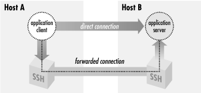

|  |
Chapter 9. Port Forwarding and X Forwarding
Contents:
What Is Forwarding?Port Forwarding
X Forwarding
Forwarding Security: TCP-wrappers and libwrap
Summary
- Securing other TCP/IP applications
- SSH can transparently encrypt another application's data stream. This is called port forwarding.
- Securing X window applications
- Using SSH, you can invoke X programs on a remote machine and have them appear, securely, on your local display. (This feature of X is insecure ordinarily.) This is called X forwarding, a special case of port forwarding for which SSH has extra support.
WARNING: In this chapter, we discuss using SSH forwarding techniques to allow otherwise prohibited traffic across firewalls. This can be a perfectly legitimate and adequately safe practice if done properly: the firewall prevents unauthorized traffic, while SSH forwarding allows authorized users to bypass the restriction. However, don't forget you are bypassing a security restriction that is in place for a reason. Be sure to follow the guidelines we give for safe SSH forwarding. Also, take care that you aren't violating a company policy by using forwarding. Just because you can do something doesn't automatically mean that it's a good idea. If in doubt, consult with your system administrators.
9.1. What Is Forwarding?
Forwarding is a type of interaction with another network application, as shown in Figure 9-1. SSH intercepts a service request from some other program on one side of an SSH connection, sends it across the encrypted connection, and delivers it to the intended recipient on the other side. This process is mostly transparent to both sides of the connection: each believes it is talking directly to its partner and has no knowledge that forwarding is taking place. Even more powerfully, SSH forwarding can achieve certain types of communication that are impossible without it.
Figure 9-1. SSH forwarding
Forwarding isn't a new concept. The basic operation of a terminal connection over a network (say, using telnet) is also a kind of forwarding. In a telnet connection, you sit on one end, your remote shell is on the other, and both sides operate as if directly connected by a serial cable. Nevertheless, sitting in the middle is a cooperating telnet client and server, forwarding bytes back and forth. SSH forwarding is much the same, except SSH plays fancy tricks with the data to add security. We have also seen another type of SSH forwarding, agent forwarding. [Section 6.3.5, "Agent Forwarding"] This let us create SSH connections from one computer, through a second computer, and onto a third using public-key authentication, but without installing our private key on the second machine. To accomplish this, an SSH server pretended to be an SSH agent, while transparently forwarding data to and from a remote agent. This paradigm holds true for TCP port forwarding and X forwarding, as the SSH server transparently masquerades as another network application. |  | |
| 8.5. Summary |  | 9.2. Port Forwarding |